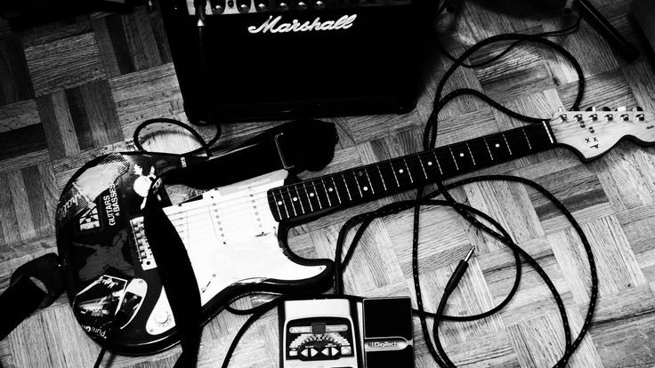

A guitarra é um instrumento musical de cordas, tocado com os dedos ou uma palheta. É popular em muitos estilos de música, incluindo rock, jazz, blues, pop e música clássica.
A guitarra tem suas origens em antigos instrumentos de cordas dedilhadas, como o alaúde e a vihuela. No século XVI, surgiu a guitarra renascentista, e no século XVIII, a guitarra clássica tomou forma com seis cordas simples. No século XX, a guitarra elétrica foi inventada, revolucionando a música e se tornando central em gêneros como rock e blues. A guitarra acústica de cordas de aço também ganhou destaque, especialmente em música folk e pop.
Hoje, a guitarra continua a evoluir com novas tecnologias e permanece um dos instrumentos mais versáteis e populares do mundo.